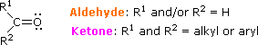
The IUPAC system of nomenclature assigns a characteristic suffix to these classes, al to aldehydes and one to ketones. For example, H2C=O is methanal, more commonly called formaldehyde. Since an aldehyde carbonyl group must always lie at the end of a carbon chain, it is by default position #1, and therefore defines the numbering direction. A ketone carbonyl function may be located anywhere within a chain or ring, and its position is given by a locator number. Chain numbering normally starts from the end nearest the carbonyl group. In cyclic ketones the carbonyl group is assigned position #1, and this number is not cited in the name, unless more than one carbonyl group is present. If you are uncertain about the IUPAC rules for nomenclature you should review them now. Examples of IUPAC names are provided (in blue) in the following diagram. Common names are in red, and derived names in black. In common names carbon atoms near the carbonyl group are often designated by Greek letters. The atom adjacent to the function is alpha, the next removed is beta and so on. Since ketones have two sets of neighboring atoms, one set is labeled α, β etc., and the other α', β' etc.
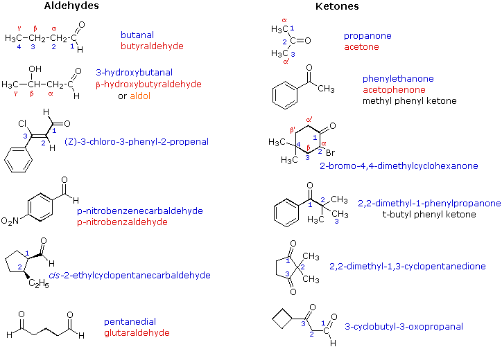
Very simple ketones, such as propanone and phenylethanone (first two examples in the right column), do not require a locator number, since there is only one possible site for a ketone carbonyl function. Likewise, locator numbers are omitted for the simple dialdehyde at the bottom left, since aldehyde functions must occupy the ends of carbon chains. The hydroxy butanal and propenal examples (2nd & 3rd from the top, left column) and the oxopropanal example (bottom right) illustrate the nomenclature priority of IUPAC suffixes. In all cases the aldehyde function has a higher status than either an alcohol, alkene or ketone and provides the nomenclature suffix. The other functional groups are treated as substituents. Because ketones are just below aldehydes in nomenclature suffix priority, the "oxo" substituent terminology is seldom needed. Simple substituents incorporating a carbonyl group are often encountered. The generic name for such groups is acyl. Three examples of acyl groups having specific names are shown below.
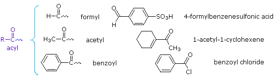
Aldehydes and ketones are widespread in nature, often combined with other functional groups. Example are shown in the following diagram. The compounds in the top row are found chiefly in plants or microorganisms; those in the bottom row have animal origins. With the exception of the first three compounds (top row) these molecular structures are all chiral. When chiral compounds are found in nature they are usually enantiomerically pure, although different sources may yield different enantiomers. For example, carvone is found as its levorotatory (R)-enantiomer in spearmint oil, whereas, caraway seeds contain the dextrorotatory (S)-enantiomer.Note that the aldehyde function is often written as –CHO in condensed or complex formulas.
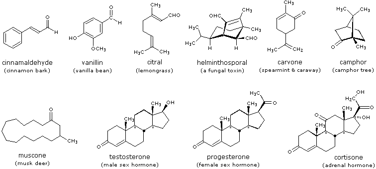
Aldehydes and ketones are obtained as products from many reactions discussed in previous sections of this text. The following diagram summarizes the most important of these. To review the previous discussion of any of these reaction classes simply click on the number (1 to 5) or descriptive heading for the group.
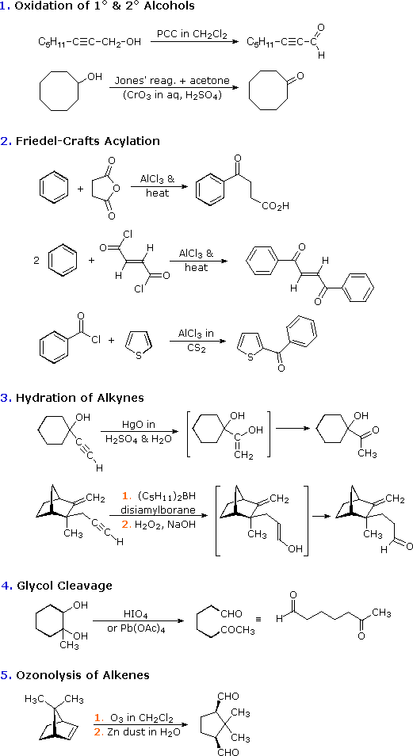
With the exception of Friedel-Crafts acylation, these methods do not increase the size or complexity of molecules. In the following sections of this chapter we shall find that one of the most useful characteristics of aldehydes and ketones is their reactivity toward carbon nucleophiles, and the resulting elaboration of molecular structure that results. In short, aldehydes and ketones are important intermediates for the assembly or synthesis of complex organic molecules.
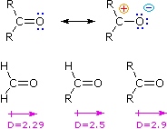
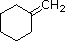
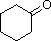
The polarity of the carbonyl group also has a profound effect on its chemical reactivity, compared with the non-polar double bonds of alkenes. Thus, reversible addition of water to the carbonyl function is fast, whereas water addition to alkenes is immeasurably slow in the absence of a strong acid catalyst. Curiously, relative bond energies influence the thermodynamics of such addition reactions in the opposite sense. The C=C of alkenes has an average bond energy of 146 kcal/mole. Since a C–C σ-bond has a bond energy of 83 kcal/mole, the π-bond energy may be estimated at 63 kcal/mole (i.e. less than the energy of the sigma bond). The C=O bond energy of a carbonyl group, on the other hand, varies with its location, as follows:
H2C=O 170 kcal/mole RCH=O 175 kcal/mole R2C=O 180 kcal/mole
The C–O σ-bond is found to have an average bond energy of 86 kcal/mole. Consequently, with the exception of formaldehyde, the carbonyl function of aldehydes and ketones has a π-bond energy greater than that of the sigma-bond, in contrast to the pi-sigma relationship in C=C. This suggests that addition reactions to carbonyl groups should be thermodynamically disfavored, as is the case for the addition of water. All of this is summarized in the following diagram (ΔHº values are for the addition reaction).
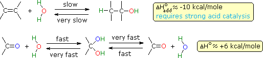
Although the addition of water to an alkene is exothermic and gives a stable product (an alcohol), the uncatalyzed reaction is extremely slow due to a high activation energy . The reverse reaction (dehydration of an alcohol) is even slower, and because of the kinetic barrier, both reactions are practical only in the presence of a strong acid. The microscopically reversible mechanism for both reactions was described earlier. In contrast, both the endothermic addition of water to a carbonyl function, and the exothermic elimination of water from the resulting geminal-diol are fast. The inherent polarity of the carbonyl group, together with its increased basicity (compared with alkenes), lowers the transition state energy for both reactions, with a resulting increase in rate. Acids and bases catalyze both the addition and elimination of water. Proof that rapid and reversible addition of water to carbonyl compounds occurs is provided by experiments using isotopically labeled water. If a carbonyl reactant composed of 16O (colored blue above) is treated with water incorporating the 18O isotope (colored red above), a rapid exchange of the oxygen isotope occurs. This can only be explained by the addition-elimination mechanism shown here.
It has been demonstrated (above) that water adds rapidly to the carbonyl function of aldehydes and ketones. In most cases the resulting hydrate (a geminal-diol) is unstable relative to the reactants and cannot be isolated. Exceptions to this rule exist, one being formaldehyde (a gas in its pure monomeric state). Here the weaker pi-component of the carbonyl double bond, relative to other aldehydes or ketones, and the small size of the hydrogen substituents favor addition. Thus, a solution of formaldehyde in water (formalin) is almost exclusively the hydrate, or polymers of the hydrate. Similar reversible additions of alcohols to aldehydes and ketones take place. The equally unstable addition products are called hemiacetals.
R2C=O + R'OH R'O–(R2)C–O–H (a hemiacetal)
Stable Hydrates and Hemiacetals To see examples of exceptional aldehydes and ketones that form stable hydrates or hemiacetals Click Here.
Acetals are geminal-diether derivatives of aldehydes or ketones, formed by reaction with two equivalents of an alcohol and elimination of water. Ketone derivatives of this kind were once called ketals, but modern usage has dropped that term. The following equation shows the overall stoichiometric change in acetal formation, but a dashed arrow is used because this conversion does not occur on simple mixing of the reactants.
R2C=O + 2 R'OH R2C(OR')2 + H2O (an acetal)
In order to achieve effective acetal formation two additional features must be implemented. First, an acid catalyst must be used; and second, the water produced with the acetal must be removed from the reaction. The latter is important, since acetal formation is reversible. Indeed, once pure acetals are obtained they may be hydrolyzed back to their starting components by treatment with aqueous acid. The mechanism shown here applies to both acetal formation and acetal hydrolysis by the principle of microscopic reversibility .
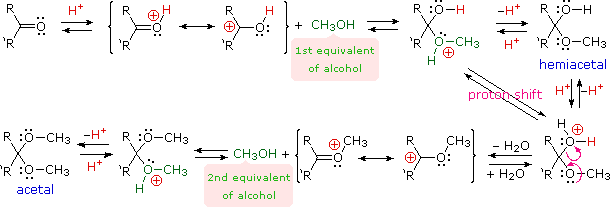
Some examples of acetal formation are presented in the following diagram. As noted, p-toluenesulfonic acid (pKa = -2) is often the catalyst for such reactions. Two equivalents of the alcohol reactant are needed, but these may be provided by one equivalent of a diol (example #2). Intramolecular involvement of a gamma or delta hydroxyl group (as in examples #3 and 4) may occur, and is often more facile than the intermolecular reaction. Thiols (sulfur analogs of alcohols) give thioacetals (example #5). In this case the carbonyl functions are relatively hindered, but by using excess ethanedithiol as the solvent and the Lewis acid BF3 as catalyst a good yield of the bis-thioacetal is obtained. Thioacetals are generally more difficult to hydrolyze than are acetals.
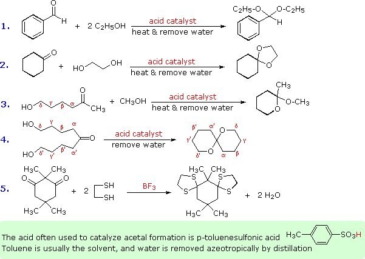
The importance of acetals as carbonyl derivatives lies chiefly in their stability and lack of reactivity in neutral to strongly basic environments. As long as they are not treated by acids, especially aqueous acid, acetals exhibit all the lack of reactivity associated with ethers in general. Among the most useful and characteristic reactions of aldehydes and ketones is their reactivity toward strongly nucleophilic (and basic) metallo-hydride, alkyl and aryl reagents (to be discussed shortly). If the carbonyl functional group is converted to an acetal these powerful reagents have no effect; thus, acetals are excellent protective groups, when these irreversible addition reactions must be prevented.
The reaction of aldehydes and ketones with ammonia or 1º-amines forms imine derivatives, also known as Schiff bases, (compounds having a C=N function). This reaction plays an important role in the synthesis of 2º-amines, as discussed earlier. Water is eliminated in the reaction, which is acid-catalyzed and reversible in the same sense as acetal formation.
An addition-elimination mechanism for this reaction was proposed, and an animation showing this mechanism is activated by the button.
Imines are sometimes difficult to isolate and purify due to their sensitivity to hydrolysis. Consequently, other reagents of the type Y–NH2 have been studied, and found to give stable products (R2C=N–Y) useful in characterizing the aldehydes and ketones from which they are prepared. Some of these reagents are listed in the following table, together with the structures and names of their carbonyl reaction products. An interesting aspect of these carbonyl derivatives is that stereoisomers are possible when the R-groups of the carbonyl reactant are different. Thus, benzaldehyde forms two stereoisomeric oximes, a low-melting isomer, having the hydroxyl group cis to the aldehyde hydrogen (called syn), and a higher melting isomer in which the hydroxyl group and hydrogen are trans (the anti isomer). At room temperature or below the configuration of the double-bonded nitrogen atom is apparently fixed in one trigonal shape, unlike the rapidly interconverting pyramidal configurations of the sp3 hybridized amines.
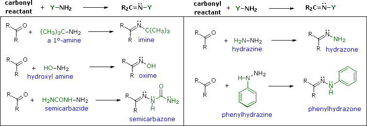
With the exception of unsubstituted hydrazones, these derivatives are easily prepared and are often crystalline solids - even when the parent aldehyde or ketone is a liquid. Since melting points can be determined more quickly and precisely than boiling points, derivatives such as these are useful for comparison and identification of carbonyl compounds. If the aromatic ring of phenylhydrazine is substituted with nitro groups at the 2- & 4-positions, the resulting reagent and the hydrazone derivatives it gives are strongly colored, making them easy to identify. It should be noted that although semicarbazide has two amino groups (–NH2) only one of them is a reactive amine. The other is amide-like and is deactivated by the adjacent carbonyl group. The rate at which these imine-like compounds are formed is generally greatest near a pH of 5, and drops at higher and lower pH's. This agrees with a general acid catalysis in which the conjugate acid of the carbonyl reactant combines with a free amino group, as shown in the above animation. At high pH there will be a vanishingly low concentration of the carbonyl conjugate acid, and at low pH most of the amine reactant will be tied up as its ammonium conjugate acid. With the exception of imine formation itself, most of these derivatization reactions do not require active removal of water (not shown as a product in the previous equations). The reactions are reversible, but equilibrium is not established instantaneously and the products often precipitate from solution as they are formed.
The previous reactions have all involved reagents of the type: Y–NH2, i.e. reactions with a 1º-amino group. Most aldehydes and ketones also react with 2º-amines to give products known as enamines. Two examples of these reactions are presented in the following diagram. It should be noted that, like acetal formation, these are acid-catalyzed reversible reactions in which water is lost. Consequently, enamines are easily converted back to their carbonyl precursors by acid-catalyzed hydrolysis. A mechanism for enamine formation may be seen by pressing the "Show Mechanism" button.
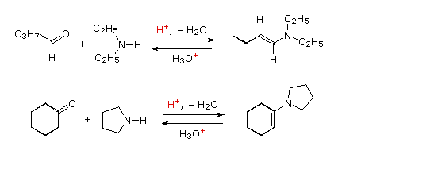
The last example of reversible addition is that of hydrogen cyanide (HC≡N), which adds to aldehydes and many ketone to give products called cyanohydrins.
RCH=O + H–C≡N RCH(OH)CN (a cyanohydrin)
Since hydrogen cyanide itself is an acid (pKa = 9.25), the addition is not acid-catalyzed. In fact, for best results cyanide anion, C≡N(-) must be present, which means that catalytic base must be added. Cyanohydrin formation is weakly exothermic, and is favored for aldehydes, and unhindered cyclic and methyl ketones. Two examples of such reactions are shown below.
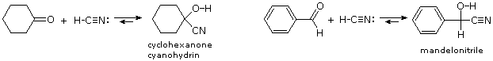
The cyanohydrin from benzaldehyde is named mandelonitrile. The reversibility of cyanohydrin formation is put to use by the millipede Apheloria corrugata in a remarkable defense mechanism. This arthropod releases mandelonitrile from an inner storage gland into an outer chamber, where it is enzymatically broken down into benzaldehyde and hydrogen cyanide before being sprayed at an enemy.
The distinction between reversible and irreversible carbonyl addition reactions may be clarified by considering the stability of alcohols having the structure shown below in the shaded box.
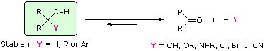
If substituent Y is not a hydrogen, an alkyl group or an aryl group, there is a good chance the compound will be unstable (not isolable), and will decompose in the manner shown. Most hydrates and hemiacetals (Y = OH & OR), for example, are known to decompose spontaneously to the corresponding carbonyl compounds. Aminols (Y = NHR) are intermediates in imine formation, and also revert to their carbonyl precursors if dehydration conditions are not employed. Likewise, α-haloalcohols (Y = Cl, Br & I) cannot be isolated, since they immediately decompose with the loss of HY. In all these cases addition of H–Y to carbonyl groups is clearly reversible. If substituent Y is a hydrogen, an alkyl group or an aryl group, the resulting alcohol is a stable compound and does not decompose with loss of hydrogen or hydrocarbons, even on heating. It follows then, that if nucleophilic reagents corresponding to H:(–), R:(–) or Ar:(–) add to aldehydes and ketones, the alcohol products of such additions will form irreversibly. Free anions of this kind would be extremely strong bases and nucleophiles, but their extraordinary reactivity would make them difficult to prepare and use. Fortunately, metal derivatives of these alkyl, aryl and hydride moieties are available, and permit their addition to carbonyl compounds.
Addition of a hydride anion to an aldehyde or ketone would produce an alkoxide anion, which on protonation should yield the corresponding alcohol. Aldehydes would give 1º-alcohols (as shown) and ketones would give 2º-alcohols.
RCH=O + H:(–) RCH2O(–) + H3O(+) RCH2OH
Two practical sources of hydride-like reactivity are the complex metal hydrides lithium aluminum hydride (LiAlH4) and sodium borohydride (NaBH4). These are both white (or near white) solids, which are prepared from lithium or sodium hydrides by reaction with aluminum or boron halides and esters. Lithium aluminum hydride is by far the most reactive of the two compounds, reacting violently with water, alcohols and other acidic groups with the evolution of hydrogen gas. The following table summarizes some important characteristics of these useful reagents.
Reagent
Preferred Solvents
Functions Reduced
Reaction Work-up
Some examples of aldehyde and ketone reductions, using the reagents described above, are presented in the following diagram. The first three reactions illustrate that all four hydrogens of the complex metal hydrides may function as hydride anion equivalents which bond to the carbonyl carbon atom. In the LiAlH4 reduction, the resulting alkoxide salts are insoluble and need to be hydrolyzed (with care) before the alcohol product can be isolated. In the borohydride reduction the hydroxylic solvent system achieves this hydrolysis automatically. The lithium, sodium, boron and aluminum end up as soluble inorganic salts. The last reaction shows how an acetal derivative may be used to prevent reduction of a carbonyl function (in this case a ketone). Remember, with the exception of epoxides, ethers are generally unreactive with strong bases or nucleophiles. The acid catalyzed hydrolysis of the aluminum salts also effects the removal of the acetal. This equation is typical in not being balanced (i.e. it does not specify the stoichiometry of the reagent).
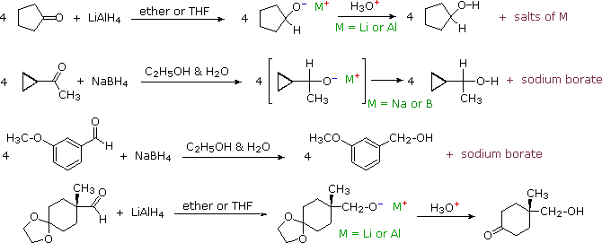
Reduction of α,β-unsaturated ketones by metal hydride reagents sometimes leads to a saturated alcohol, especially with sodium borohydride. This product is formed by an initial conjugate addition of hydride to the β-carbon atom, followed by ketonization of the enol product and reduction of the resulting saturated ketone (equation 1 below). If the saturated alcohol is the desired product, catalytic hydrogenation prior to (or following) the hydride reduction may be necessary. To avoid reduction of the double bond, cerium(III) chloride is added to the reaction and it is normally carried out below 0 ºC, as shown in equation 2.
Before leaving this topic it should be noted that diborane, B2H6, a gas that was used in ether solution to prepare alkyl boranes from alkenes, also reduces many carbonyl groups. Consequently, selective reactions with substrates having both functional groups may not be possible. In contrast to the metal hydride reagents, diborane is a relatively electrophilic reagent, as witnessed by its ability to reduce alkenes. This difference also influences the rate of reduction observed for the two aldehydes shown below. The first, 2,2-dimethylpropanal, is less electrophilic than the second, which is activated by the electron withdrawing chlorine substituents.
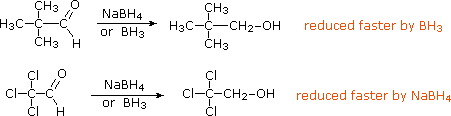
Dissolving Metal Reduction Carbonyl groups and conjugated π-electron systems are reduced by metals such as Li, Na and K, usually in liquid ammonia solution. To see examples of these reactions, Click Here.
The two most commonly used compounds of this kind are alkyl lithium reagents and Grignard reagents. They are prepared from alkyl and aryl halides, as discussed earlier. These reagents are powerful nucleophiles and very strong bases (pKa's of saturated hydrocarbons range from 42 to 50), so they bond readily to carbonyl carbon atoms, giving alkoxide salts of lithium or magnesium. Because of their ring strain, epoxides undergo many carbonyl-like reactions, as noted previously. Reactions of this kind are among the most important synthetic methods available to chemists, because they permit simple starting compounds to be joined to form more complex structures. Examples are shown in the following diagram.
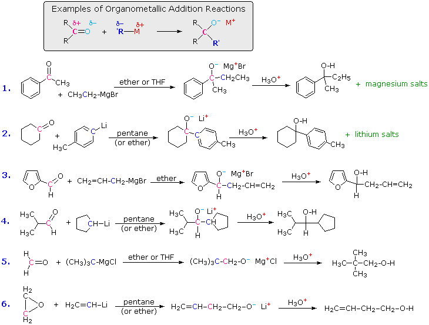
A common pattern, shown in the shaded box at the top, is observed in all these reactions. The organometallic reagent is a source of a nucleophilic alkyl or aryl group (colored blue), which bonds to the electrophilic carbon of the carbonyl group (colored magenta). The product of this addition is a metal alkoxide salt, and the alcohol product is generated by weak acid hydrolysis of the salt. The first two examples show that water soluble magnesium or lithium salts are also formed in the hydrolysis, but these are seldom listed among the products, as in the last four reactions. Ketones react with organometallic reagents to give 3º-alcohols; most aldehydes react to produce 2º-alcohols; and formaldehyde and ethylene oxide react to form 1º-alcohols (examples #5 & 6). When a chiral center is formed from achiral reactants (examples #1, 3 & 4) the product is always a racemic mixture of enantiomers. Two additional examples of the addition of organometallic reagents to carbonyl compounds are informative. The first demonstrates that active metal derivatives of terminal alkynes function in the same fashion as alkyl lithium and Grignard reagents. The second example again illustrates the use of acetal protective groups in reactions with powerful nucleophiles. Following acid-catalyzed hydrolysis of the acetal, the resulting 4-hydroxyaldehyde is in equilibrium with its cyclic hemiacetal.
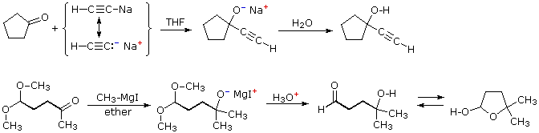
Reactions with Phosphorus and Sulfur Ylides The ylides are another class of nucleophilic organic reagents that add rapidly to the carbonyl function of aldehydes and ketones. To learn about ylides and their reactions Click Here.
The metal hydride reductions and organometallic additions to aldehydes and ketones, described above, both decrease the carbonyl carbon's oxidation state, and may be classified as reductions. As noted, they proceed by attack of a strong nucleophilic species at the electrophilic carbon. Other useful reductions of carbonyl compounds, either to alcohols or to hydrocarbons, may take place by different mechanisms. For example, hydrogenation (Pt, Pd, Ni or Ru catalysts), reaction with diborane, and reduction by lithium, sodium or potassium in hydroxylic or amine solvents have all been reported to convert carbonyl compounds into alcohols. However, the complex metal hydrides are generally preferred for such transformations because they give cleaner products in high yield.
Aldehydes and ketones may also be reduced by hydride transfer from alkoxide salts. To learn about this method Click Here.
The reductive conversion of a carbonyl group to a methylene group requires complete removal of the oxygen, and is called deoxygenation. In the shorthand equation shown here the [H] symbol refers to unspecified reduction conditions which effect the desired change. Three very different methods of accomplishing this transformation will be described here.
R2C=O + [H] R2CH2 + H2O
1. Wolff-Kishner Reduction
Reaction of an aldehyde or ketone with excess hydrazine generates a hydrazone derivative, which on heating with base gives the corresponding hydrocarbon. A high-boiling hydroxylic solvent, such as diethylene glycol, is commonly used to achieve the temperatures needed. The following diagram shows how this reduction may be used to convert cyclopentanone to cyclopentane. A second example, in which an aldehyde is similarly reduced to a methyl group, also illustrates again the use of an acetal protective group. The mechanism of this useful transformation involves tautomerization of the initially formed hydrazone to an azo isomer, and will be displayed on pressing the "Show Mechanism" button. The strongly basic conditions used in this reaction preclude its application to base sensitive compounds.
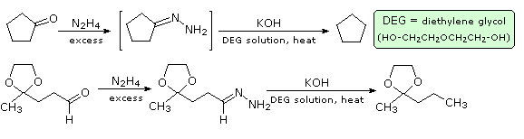
2. Clemmensen Reduction
This alternative reduction involves heating a carbonyl compound with finely divided, amalgamated zinc. in a hydroxylic solvent (often an aqueous mixture) containing a mineral acid such as HCl. The mercury alloyed with the zinc does not participate in the reaction, it serves only to provide a clean active metal surface. The first example below shows a common application of this reduction, the conversion of a Friedel-Crafts acylation product to an alkyl side-chain. The second example illustrates the lability of functional substituents alpha to the carbonyl group. Substituents such as hydroxyl, alkoxyl & halogens are reduced first, the resulting unsubstituted aldehyde or ketone is then reduced to the parent hydrocarbon. A possible mechanism for the Clemmensen reduction will be displayed by clicking the "Show Mechanism" button.
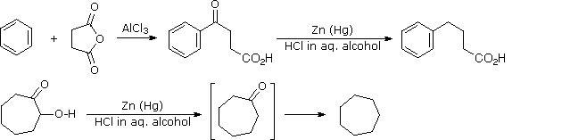
3. Hydrogenolysis of Thioacetals
In contrast to the previous two procedures, this method of carbonyl deoxygenation requires two separate steps. It does, however, avoid treatment with strong base or acid. The first step is to convert the aldehyde or ketone into a thioacetal, as described earlier. These derivatives may be isolated and purified before continuing the reduction. The second step involves refluxing an acetone solution of the thioacetal over a reactive nickel catalyst, called Raney Nickel. All carbon-sulfur bonds undergo hydrogenolysis (the C–S bonds are broken by addition of hydrogen). In the following example, 1,2-ethanedithiol is used for preparing the thioacetal intermediate, because of the high yield this reactant usually affords. The bicyclic compound shown here has two carbonyl groups, one of which is sterically hindered (circled in orange). Consequently, a mono-thioacetal is easily prepared from the less-hindered ketone, and this is reduced without changing the remaining carbonyl function.
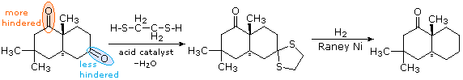
The carbon atom of a carbonyl group has a relatively high oxidation state. This is reflected in the fact that most of the reactions described thus far either cause no change in the oxidation state (e.g. acetal and imine formation) or effect a reduction (e.g. organometallic additions and deoxygenations). The most common and characteristic oxidation reaction is the conversion of aldehydes to carboxylic acids. In the shorthand equation shown here the [O] symbol refers to unspecified oxidation conditions which effect the desired change. Several different methods of accomplishing this transformation will be described here.
RCH=O + [O] RC(OH)=O
In discussing the oxidations of 1º and 2º-alcohols, we noted that Jones' reagent (aqueous chromic acid) converts aldehydes to carboxylic acids, presumably via the hydrate. Other reagents, among them aqueous potassium permanganate and dilute bromine, effect the same transformation. Even the oxygen in air will slowly oxidize aldehydes to acids or peracids, most likely by a radical mechanism. Useful tests for aldehydes, Tollens' test, Benedict's test & Fehling's test, take advantage of this ease of oxidation by using Ag(+) and Cu(2+) as oxidizing agents (oxidants).
RCH=O + 2 [Ag(+) OH(–)] RC(OH)=O + 2 Ag (metallic mirror) + H2O
When silver cation is the oxidant, as in the above equation, it is reduced to metallic silver in the course of the reaction, and this deposits as a beautiful mirror on the inner surface of the reaction vessel. The Fehling and Benedict tests use cupric cation as the oxidant. This deep blue reagent is reduced to cuprous oxide, which precipitates as a red to yellow solid. All these cation oxidations must be conducted under alkaline conditions. To avoid precipitation of the insoluble metal hydroxides, the cations must be stabilized as complexed ions. Silver is used as its ammonia complex, Ag(NH3)2(+), and cupric ions are used as citrate or tartrate complexes.
Saturated ketones are generally inert to oxidation conditions that convert aldehydes to carboxylic acids. Nevertheless, under vigorous acid-catalyzed oxidations with nitric or chromic acids ketones may undergo carbon-carbon bond cleavage at the carbonyl group. The reason for the vulnerability of the alpha-carbon bond will become apparent in the following section.
For a summary of the fundamental reactions of aldehydes and ketones Click Here
This page is the property of The Edvibe Team. Comments, questions and errors should be sent to contact@edvibe.co.ke. These pages are provided to the IOCD to assist in capacity building in chemical education. 05/05/2013